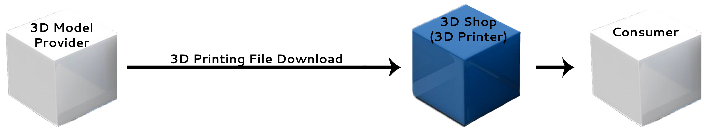
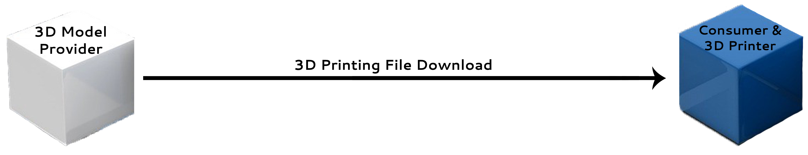

The impact of 3D Printing Technology is ever expanding while the technology achieves acceptance and new functionalities to improve its use for numerous industries.
Advantages of the 3D Printing Model
Cost
Savings
- Reduce required tooling and machining centers
- Economical mass customization
- Reduce transportation cost

Time
Savings
- Lessen time between design and product
- Shorter lead time
- Enabling on-demand manufacturing

Quality Improvement
- More optimum products across many industries
- Incorporate customer feedback
- Management of demand uncertainty

Environmental Impact
- Less negative impact on environment
- Reduce carbon footprint
- Reduce traditional manufacturing waste
Inventory and Logistics
The technology has the potential to extensively impact inventory and logistics through the ability to print on demand. Inventories of products in warehouses would become obsolete because if a product was needed it could be created on the spot. The utility of onsite production would additionally limit the need for product logistics.
Industries
Companies are starting to adopt 3D Printing Technology and realize the benefits. The industries with foremost transformative possibilities are automotive, healthcare, and aerospace. Additive Manufacturing facilitates the manufacturing of goods in remote locations by removing the complication of delivery.
Aerospace
NASA realizes this technology could prove beneficial in space and began testing in zero gravity. The realization of zero gravity use of Additive Manufacturing could provide maintenance and repair components to astronauts. The lead time on parts would be drastically reduced and eliminate the necessity for part delivery by shuttle.
Supply Chain
The supply chain model is also impacted by the acceptance of 3D Printing Technology by circumventing traditional supply chain constraints. Additive Manufacturing cuts out at least half of the supply chain through its abolishment of high volume production facilities and low level assembly workers. A globally connected, but local supply chain could be realized through the technology.
Traditional Supply Chain vs Additive Manufacturing Model
Traditional Supply Chain
Additive Manufacturing Model
or
